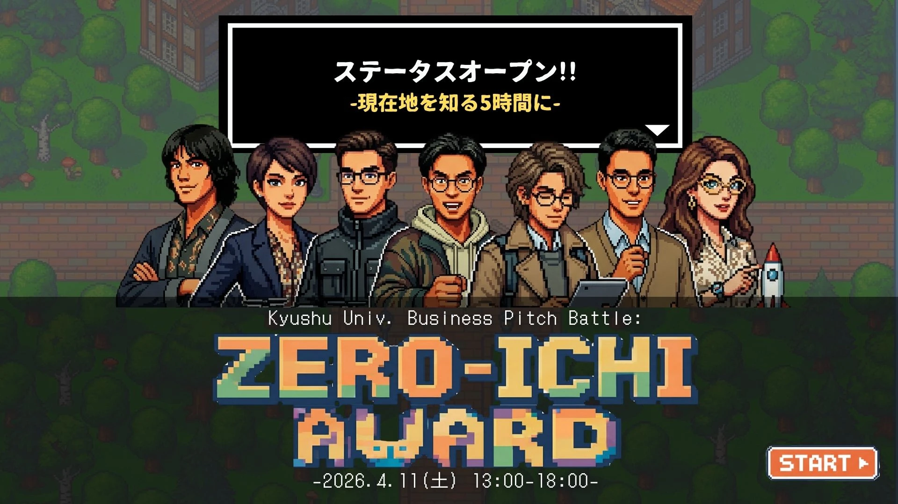
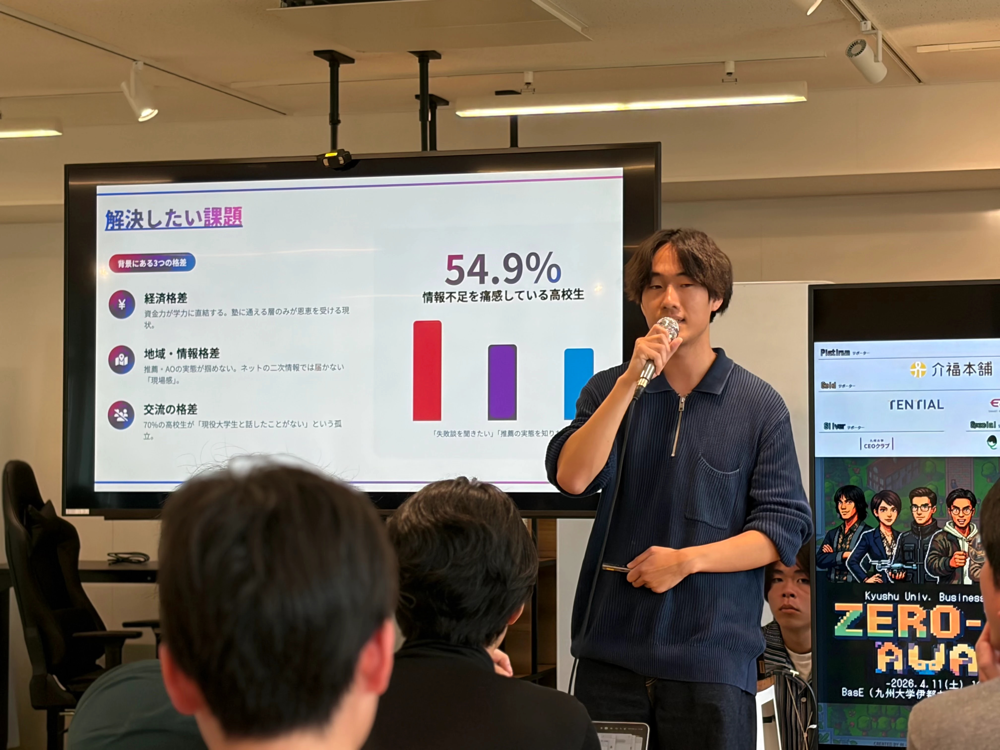
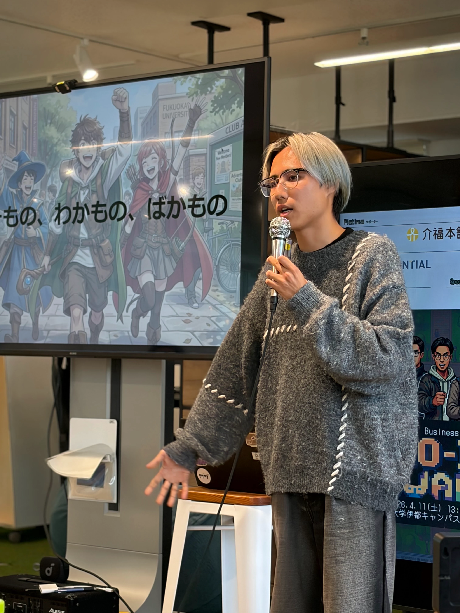

ゼロイチAWARD
ABOUT

何者でもない自分を、熱狂の渦で再定義する。
「“すごい”で終わらせない。行動変容を促す舞台。」
ゼロイチAWARDは、単なるアイデアの優劣を競う場所ではありません。一ヶ月のプログラム期間中、どれだけ泥臭く動き、どれだけ多くの失敗と発見を積み上げてきたか。その「行動の証跡」を称え、次の一手へと繋げるためのピッチコンテストです。
新入生には「同世代のトップランナーとの圧倒的な差」を突きつけ、在校生には「知っているつもり」という慢心と自己認識のズレを自覚させる。現状維持の心地よさを破壊し、再び熱を帯びて動き出すための起爆剤となります。
FEATURES
泥臭い行動ログの可視化
綺麗な成功話ではなく、スケジュールや失敗、拒絶された経験などの「証拠」を公開します。
観覧者参加型審査
「自分と何が違うか」を評価基準にし、観客自身の次の行動を促します。
次の一手を決める決意表明
会場に設置された「決意の壁」に、帰宅後の具体的なアクションを貼り出す仕組みです。
PITCH STYLE

熱量ピッチ（3分）
個人の原体験、なぜ自分がやるのかという「Will」を凝縮。論理を超えた共感と熱を伝播させます。

事業ピッチ（7分）
一ヶ月で得られた事実に基づき、市場性、優位性、収益性を説明。地に足の着いた、次の一歩のための提案を行います。
JUDGING CRITERIA
代謝・摩擦熱
どれだけ多くの行動（摩擦）を起こし、自らの内面をアップデート（代謝）させたか。
変異熱
固定観念を打ち破り、今までにない新しい価値観や解決策への進化（変異）を感じさせたか。
引火熱
そのプレゼンテーションが、周囲の人間を動かすほどの熱を持っていたか。